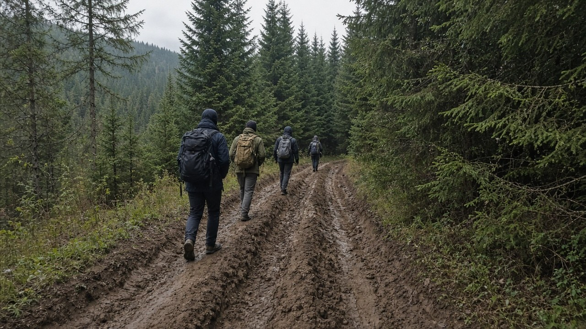

Инструктор · тропы и база

Участок тропы у нижней парковки
Громов Алексей — инструктор турклуба «Седой Хребет». Ходит со сменами на маршрутах средней сложности, следит за состоянием троп после дождей и вывешивает расписание тренировок на скалодроме у склада.